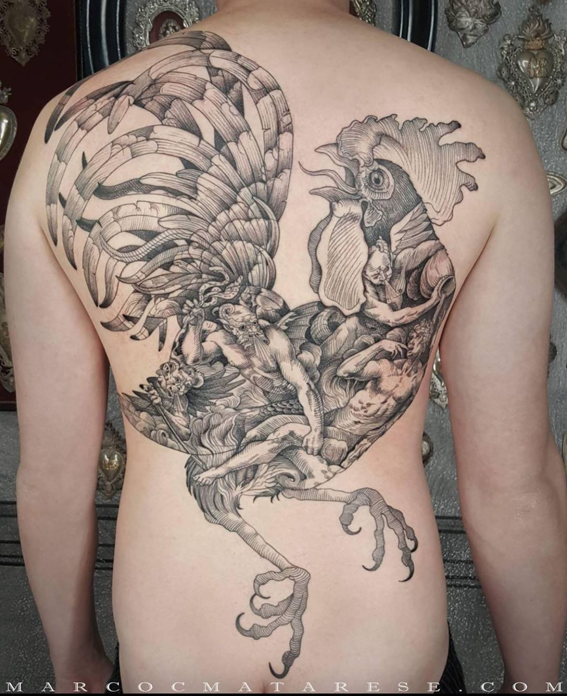
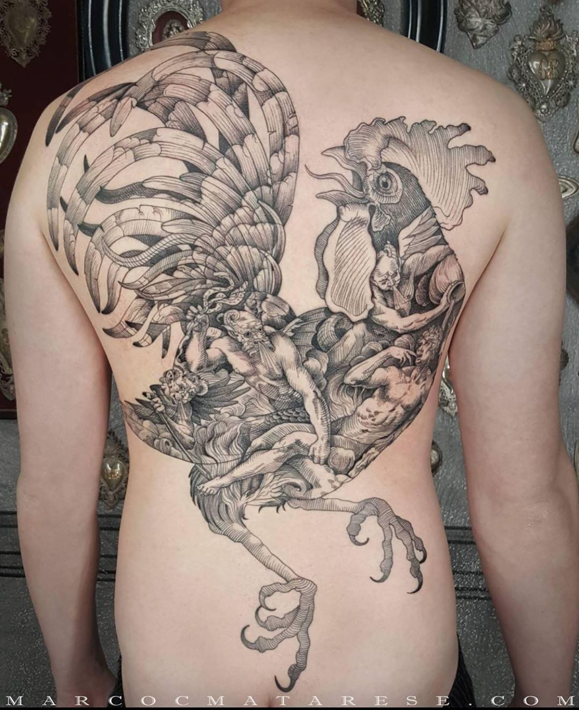

Etching
Questo stile di tatuaggio dà nuova vita a immagini solenni attraverso l’applicazione di inchiostro nero in linee sottili, per suggerire volumi e chiaroscuri. Marco Matarese raffigura oggetti, statue frammentate, mirabilia provenienti da diverse fonti, ma il denominatore comune è l’uomo con le sue paure,difetti e debolezze. Uno dei temi ricorrenti, è quello delle sculture rotte, crepate. Espediente per parlare in modo elegante della psiche umana. Graficamente traspongo su pelle la tecnica incisoria dell’acquaforte, costituita da linee tracciate con lo stesso ago ma catalogabili in diverse categorie. Le linee primarie sottolineano i volumi, le secondarie abbozzano il chiaroscuro, il graffio appena leggibile ne dà carattere. Ognuna di queste linee è ragionata per dare espressività e pathos, ma soprattutto per invecchiare bene sul corpo del cliente. Tematicamente, oggetti, stampe e ricordi sono mescolati per creare una poetica lontana dal didascalismo.
 
